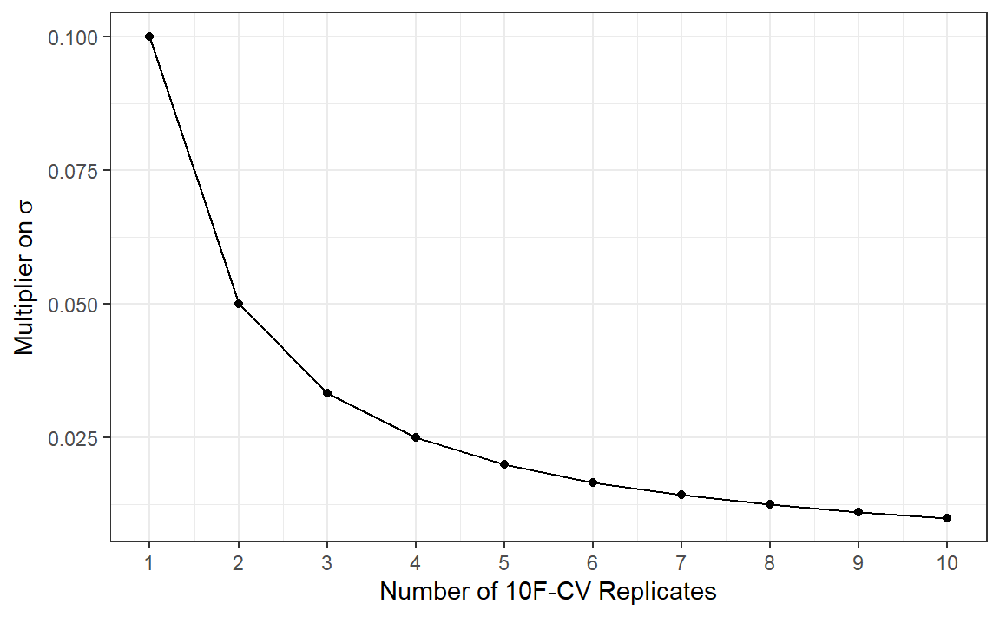
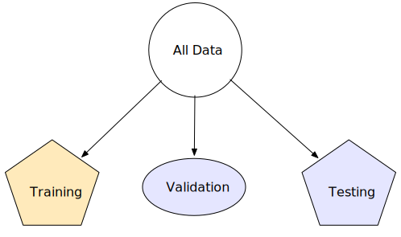
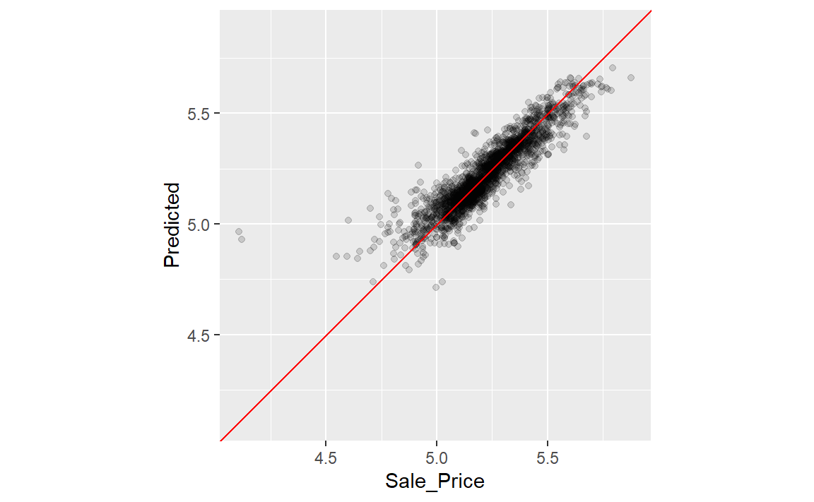

library(tidymodels)
#> ── Attaching packages ─────────────────────────────────── tidymodels 1.4.1 ──
#> ✔ broom 1.0.9 ✔ recipes 1.3.1
#> ✔ dials 1.4.2 ✔ rsample 1.3.1
#> ✔ dplyr 1.1.4 ✔ tailor 0.1.0
#> ✔ ggplot2 3.5.2 ✔ tidyr 1.3.1
#> ✔ infer 1.0.9 ✔ tune 2.0.0
#> ✔ modeldata 1.5.1 ✔ workflows 1.3.0
#> ✔ parsnip 1.3.3 ✔ workflowsets 1.1.1
#> ✔ purrr 1.1.0 ✔ yardstick 1.3.2
#> ── Conflicts ────────────────────────────────────── tidymodels_conflicts() ──
#> ✖ purrr::discard() masks scales::discard()
#> ✖ dplyr::filter() masks stats::filter()
#> ✖ dplyr::lag() masks stats::lag()
#> ✖ recipes::step() masks stats::step()
data(ames)
ames <- mutate(ames, Sale_Price = log10(Sale_Price))
set.seed(502)
ames_split <- initial_split(ames, prop = 0.80, strata = Sale_Price)
ames_train <- training(ames_split)
ames_test <- testing(ames_split)
ames_rec <-
recipe(Sale_Price ~ Neighborhood + Gr_Liv_Area + Year_Built + Bldg_Type +
Latitude + Longitude, data = ames_train) %>%
step_log(Gr_Liv_Area, base = 10) %>%
step_other(Neighborhood, threshold = 0.01) %>%
step_dummy(all_nominal_predictors()) %>%
step_interact(~ Gr_Liv_Area:starts_with("Bldg_Type_")) %>%
step_ns(Latitude, Longitude, deg_free = 20)
lm_model <- linear_reg() %>% set_engine("lm")
lm_wflow <-
workflow() %>%
add_model(lm_model) %>%
add_recipe(ames_rec)
lm_fit <- fit(lm_wflow, ames_train)10 Resampling for Evaluating Performance
我们已经介绍了评估模型性能时必须综合考虑的几个方面。第9章描述了用于衡量模型性能的统计量。第5章引入了数据使用的概念，并且我们建议使用测试集来获得无偏的性能估计。然而，我们通常需要在使用测试集之前了解一个甚至多个模型的性能（测试集只能使用一次?）。通常情况下，在第一次评估模型性能之前，我们无法决定使用哪个最终模型来处理测试集。我们对可靠地衡量性能的需求与我们可用的数据拆分（训练集和测试集）之间存在差距。
在本章中，我们将介绍一种名为重采样的方法，它能够填补这一空白。重采样得出的性能估计值可以像测试集得出的估计值一样，推广到新数据。下一章将通过展示用于比较重采样结果的统计方法，对本章内容进行补充。
为了充分理解重抽样的价值，让我们首先来看一下重代入法（这种方法常常会失败）。
The Resubstitution Approach
所谓重带入，就是使用用于训练的相同数据（训练集而非测试集或新数据）来衡量性能。让我们再次使用Ames房价数据来演示这些概念。
第8.8节总结了Ames数据分析的当前状态：包括一个名为ames_rec的recipe对象、一个线性模型，以及一个使用该recipe对象和模型的工作流，名为lm_wflow，这个工作流在训练集上进行了拟合，得到了lm_fit。
为了与这个线性模型进行比较，我们可以拟合另一种类型的模型——随机森林。随机森林是一种树集成方法，其运作方式是从训练集的略有不同的版本（下采样获得）中训练大量决策树（Breiman，2001a），组合这些树构成集成模型。在预测新样本时，每个决策树都会做出独立的预测，这些预测会被平均，以形成新数据点的最终集成预测。随机森林模型非常强大，它们能够非常精准地模拟潜在的数据模式。虽然这种模型在计算上可能较为密集，但维护成本极低；几乎不需要进行预处理（如附录A中所记载）。
使用与线性模型相同的预测变量集（不包含额外的预处理步骤），我们可以通过”ranger”引擎（来自 ranger R包）将随机森林模型拟合到训练集。该模型无需预处理，因此可以使用一个简单的公式：
rf_model <-
rand_forest(trees = 1000) %>%
set_engine("ranger") %>%
set_mode("regression")
rf_wflow <-
workflow() %>%
add_formula(
Sale_Price ~ Neighborhood + Gr_Liv_Area + Year_Built + Bldg_Type +
Latitude + Longitude
) %>%
add_model(rf_model)
rf_fit <- rf_wflow %>% fit(data = ames_train)我们应该如何比较线性模型和随机森林模型呢？为了演示，我们将对训练集进行预测，以生成所谓的表观度量或重代入度量。以下函数用于生成预测并格式化结果：
estimate_perf <- function(model, dat) {
# Capture the names of the `model` and `dat` objects
cl <- match.call()
obj_name <- as.character(cl$model)
data_name <- as.character(cl$dat)
data_name <- gsub("ames_", "", data_name)
# Estimate these metrics:
reg_metrics <- metric_set(rmse, rsq)
model %>%
predict(dat) %>%
bind_cols(dat %>% select(Sale_Price)) %>%
reg_metrics(Sale_Price, .pred) %>%
select(-.estimator) %>%
mutate(object = obj_name, data = data_name)
}重代入统计量计算均方根误差（RMSE）和决定系数（\(R_2\)）如下：
estimate_perf(rf_fit, ames_train)
#> # A tibble: 2 × 4
#> .metric .estimate object data
#> <chr> <dbl> <chr> <chr>
#> 1 rmse 0.0364 rf_fit train
#> 2 rsq 0.960 rf_fit train
estimate_perf(lm_fit, ames_train)
#> # A tibble: 2 × 4
#> .metric .estimate object data
#> <chr> <dbl> <chr> <chr>
#> 1 rmse 0.0754 lm_fit train
#> 2 rsq 0.816 lm_fit train基于重代入的结果，随机森林在预测销售价格方面的能力要强得多；其均方根误差（RMSE）估计值比线性回归好两倍。如果我们需要在这两个模型中为价格预测问题做出选择，我们可能会选择随机森林。但如果将随机森林模型应用到测试集进行最终验证时：
estimate_perf(rf_fit, ames_test)
#> # A tibble: 2 × 4
#> .metric .estimate object data
#> <chr> <dbl> <chr> <chr>
#> 1 rmse 0.0701 rf_fit test
#> 2 rsq 0.853 rf_fit test测试集的均方根误差（RMSE）估计值比训练集的差很多！这是为什么呢？
在统计学中，有一类低偏差模型，它们能够从数据中学习复杂的趋势。所谓偏差是指数据中真实的模式（或关系）与模型能够模拟的模式（或关系）之间的差异。许多黑箱机器学习模型具有低偏差特征，它们能够再现复杂的关系；其他模型（如线性/逻辑回归、判别分析等）的适应性较差，被认为是高偏差模型。对于低偏差模型而言，其高度的预测能力有时会导致模型几乎记住训练集数据（过拟合）。举一个明显的例子，k=1的最近邻模型，无论在其他数据集上实际表现如何，它总能对训练集做出完美的预测；随机森林模型也类似。对训练集重新预测总会得出对性能的人为乐观估计。
对于这两个模型， Table 1 总结了训练集和测试集的均方根误差（RMSE）估计值。注意，由于线性回归模型的复杂度有限，它在训练集和测试集上的表现是一致的。
| object | train | test |
|---|---|---|
| lm_fit | 0.0754450 | 0.0736297 |
| rf_fit | 0.0364254 | 0.0700734 |
以上的例子说明：重新预测训练集会导致对模型性能的估计过于乐观，这在大多数模型中都不是一个好主意。如果不能立即使用测试集，且重新预测训练集又不是个好主意，那该怎么办呢？重采样方法，如交叉验证或验证集，就是解决办法。
Resampling Methods
重采样方法是一种经验模拟系统，它模拟使用部分数据进行建模、使用不同数据进行评估的过程。大多数重采样方法都是迭代式的，这意味着该过程会重复多次。 Figure 1 展示了重采样方法的大致运作方式。

正如你在 Figure 1 中所看到的，重抽样仅在训练集上进行，测试集不参与其中。在重抽样的每一次迭代中，数据会被划分为两个子样本：
分析集（analysis set）：用来训练模型
评估集（assessment set）：用来评估模型
这两个子样本在某种程度上类似于训练集和测试集。为了避免混淆，我们使用新的术语——分析集和评估集，两者是互斥的。假设进行20次重抽样迭代，这意味着在分析集上拟合20个独立的模型，而相应的评估集则会产生20组性能统计数据。一个模型的最终性能估计值是这20个统计数据的平均值。这个平均值具有非常好的泛化特性，远优于重新代入估计值。不同的重采样方法会有不同的创建分析集和评估集的方法。下一节将定义几种常用的重采样方法，并讨论它们的优缺点。
Cross-validation
交叉验证（Cross-validation）是一种成熟的重抽样方法。虽然它有多种变体，但最常见的交叉验证方法是 V 折交叉验证——数据被随机划分为 V 个大小大致相等的集合（称为折）。 Figure 2 展示了 V = 3 的情况：对包含30个训练集样本点的数据，进行折随机分配。图中的数字是样本编号，颜色代表它们被随机分配的折数。分层抽样也是一种分配折数的方法（在5.1节中已讨论过）。

对于三折交叉验证，重采样的三次迭代如 Figure 3 所示。在每次迭代中，留出一折用作评估集，其余折用作分析集，三折迭代三次，产生三个模型和三组性能统计数据。即，当 V = n 时，分析集占训练集的 (n-1)/n，每个评估集都是不同的 1/n ，最终的重抽样性能估计值是 V 次重复的平均值。

此处使用 V = 3 仅为说明交叉验证是一个不错的选择，在实践中，最常用的 V 值是5或10。因为较大的 V 值会导致重采样估计的偏差较小，但方差较大；较小的 V 值则相反——偏差较大，但方差较小。我们通常倾向于将10折交叉验证作为默认选择，因为在大多数情况下，它的规模足以产生良好的结果。
主要输入是训练集和折数 V（默认值为10），生成的对象包含两列：
-
splits列，包含关于如何分割数据的信息（类似于用于创建初始训练/测试分区的对象）。 -
id列，包含折的标识符。
虽然splits的每一行都嵌入了整个训练集的副本，但不会在内存中复制数据。打印tibble格式的数据框会显示每一项的频数：[2107/235]表示分析集大约有2000个样本，评估集有235个样本。
set.seed(1001)
ames_folds <- rsample::vfold_cv(ames_train, v = 10)
ames_folds
#> # 10-fold cross-validation
#> # A tibble: 10 × 2
#> splits id
#> <list> <chr>
#> 1 <split [2107/235]> Fold01
#> 2 <split [2107/235]> Fold02
#> 3 <split [2108/234]> Fold03
#> 4 <split [2108/234]> Fold04
#> 5 <split [2108/234]> Fold05
#> 6 <split [2108/234]> Fold06
#> # ℹ 4 more rows需要手动检索分区数据时，可以使用analysis()和assessment()函数，会返回相应的数据框：
# For the first fold:
ames_folds$splits[[1]] %>%
analysis() %>%
dim()
#> [1] 2107 74tidymodels系列包（例如tune包）包含更高级的用户API，因此像analysis()这样的函数通常不需要用于日常工作。10.3节演示了一个在这些重抽样上拟合模型的函数。
交叉验证有多种变体，我们将介绍其中最重要的几种。
Repeated cross-validation
交叉验证最重要的变体是重复 V 折交叉验证。根据数据规模或其他特征，V折交叉验证产生的重采样估计可能会有过大的噪声。与许多统计问题一样，减少噪声的一种方法是收集更多数据。对于交叉验证来说，这意味着要获取超过 V 个统计量，然后取平均值。为此，我们只需要重复执行 R 次 V 折交叉验证，就可以获取 V × R 个统计量来得出最终的重抽样估计值。根据中心极限定理，只要我们拥有相对于 V × R 而言足够多的数据，每个模型的汇总统计量就会趋向于正态分布。
考虑Ames数据集，如果选择均方根误差（RMSE）作为统计量，我们可以将该估计值的标准差记为 \(\sigma\) 。对于简单的10折交叉验证，平均RMSE的标准误为 \(\sigma/\sqrt{10}\) 。如果这一结果噪声过大，重复交叉验证可以将标准误降至 \(\sigma/\sqrt{10R}\) 。对于具有 R 次重复的10折交叉验证， Figure 4 展示了标准误随重复次数增加而快速降低的情况。

更多的重复次数对标准误差的影响往往较小。然而，如果\(\sigma\)的基线值大得不切实际，那么重复次数增加所带来的边际效益递减可能仍然值得额外的计算成本。
创建重复项，可以使用vfold_v()中的参数repeats：
vfold_cv(ames_train, v = 10, repeats = 5)
#> # 10-fold cross-validation repeated 5 times
#> # A tibble: 50 × 3
#> splits id id2
#> <list> <chr> <chr>
#> 1 <split [2107/235]> Repeat1 Fold01
#> 2 <split [2107/235]> Repeat1 Fold02
#> 3 <split [2108/234]> Repeat1 Fold03
#> 4 <split [2108/234]> Repeat1 Fold04
#> 5 <split [2108/234]> Repeat1 Fold05
#> 6 <split [2108/234]> Repeat1 Fold06
#> # ℹ 44 more rowsLeave-one-out cross-validation
交叉验证的一种变体是留一法（leave-one-out，LOO）交叉验证。如果有n个训练集样本，就会使用训练集中的n-1行数据拟合n个模型。每个模型都会对那个被排除的单一数据点进行预测。在重采样结束时，这n个预测结果会被汇总，以生成一个单一的性能统计量。留一法与几乎所有其他方法相比都存在不足，除了样本量极小的情况外，留一法的计算量过大，而且可能不具备良好的统计特性。尽管rsample包中包含一个loo_cv()函数，但这些对象通常并未整合到更广泛的tidymodels框架中。
Monte Carlo cross-validation
另一种V折交叉验证的变体是蒙特卡洛交叉验证（Monte Carlo cross-validation，MCCV，Xu和Liang（2001））。与V折交叉验证类似，它将固定比例的数据分配给评估集。不同之处在于，每次分配都是随机选择，导致评估集间并非相互排斥。使用mc_cv()函数创建该重采样对象：
mc_cv(ames_train, prop = 9 / 10, times = 20)
#> # Monte Carlo cross-validation (0.9/0.1) with 20 resamples
#> # A tibble: 20 × 2
#> splits id
#> <list> <chr>
#> 1 <split [2107/235]> Resample01
#> 2 <split [2107/235]> Resample02
#> 3 <split [2107/235]> Resample03
#> 4 <split [2107/235]> Resample04
#> 5 <split [2107/235]> Resample05
#> 6 <split [2107/235]> Resample06
#> # ℹ 14 more rowsValidation sets
在第5.2节中，我们简要讨论过，验证集是一个单独划分出来的数据集，用于独立于测试集评估模型性能，如 Figure 5 。

当原始数据量非常大时，通常会使用验证集，因为在这种情况下，一个大型的单一分区可能足以描述模型性能，而无需进行多次重采样迭代。借助rsample包，验证集可以像其他任何重抽样对象一样被调用；不同之处仅在于它只有一次迭代。Figure 6 展示了这种方案。

使用validation_set()函数，可以将第5.2节代码中initial_validation_split()的结果转换为一个与vfold_cv()等函数生成的结果类似的对象：
# Previously:
set.seed(52)
# To put 60% into training, 20% in validation, and 20% in testing:
ames_val_split <- initial_validation_split(ames, prop = c(0.6, 0.2))
ames_val_split
#> <Training/Validation/Testing/Total>
#> <1758/586/586/2930>
# Object used for resampling:
val_set <- validation_set(ames_val_split)
val_set
#> # A tibble: 1 × 2
#> splits id
#> <list> <chr>
#> 1 <split [1758/586]> validation正如你将在第10.3节中看到的，fit_resamples()函数将用于通过重采样计算准确的性能估计。val_set对象可以在该函数和其他函数中使用，尽管它只是数据的一次“重采样”。
Bootstrapping
自助重采样最初是用来近似（难以理论推导）统计量的抽样分布（Davison 和 Hinkley，1997），将其用于估计模型性能是该方法的次要应用。
训练集的自助重采样结果是一个与训练集大小相同但通过有放回抽样得到的样本。这意味着一些训练集数据点会被多次选入分析集，且每个数据点至少被选入分析集一次的概率为63.2%；评估集包含所有未被选入分析集的训练集样本（平均而言，占训练集的36.8%）。在自助重采样中，评估集通常被称为袋外样本。
Note63.8%的由来
假设有 n 个样本，则每个样本被抽到的概率是 \(\frac{1}{n}\)，没有被抽到概率是 \(1-\frac{1}{n}\)，重复抽取 n 次都没抽到某个样本的概率为 \((1-\frac{1}{n})^n\)。推导极限：
\(lim_{n\to\infty} (1-\frac{1}{n})^n = \frac{1}{e} \approx 0.3679\)
可以看到一次都没抽到的概率是36.8%，至少一次被抽中的概率是63.2%。
对于一个包含30个样本的训练集，Figure 7 展示了三个自助抽样样本的示意图。请注意，评估集的大小各不相同。

创建自助法重抽样可以使用rsample::bootstraps()函数：
bootstraps(ames_train, times = 5)
#> # Bootstrap sampling
#> # A tibble: 5 × 2
#> splits id
#> <list> <chr>
#> 1 <split [2342/867]> Bootstrap1
#> 2 <split [2342/869]> Bootstrap2
#> 3 <split [2342/859]> Bootstrap3
#> 4 <split [2342/858]> Bootstrap4
#> 5 <split [2342/873]> Bootstrap5自助重抽样产生的性能估计值的方差非常小（与交叉验证不同），但存在显著的悲观偏差。这意味着，如果一个模型的真实准确率是90%，自助重抽样得出的估计值会低于90%。这种偏差的大小无法通过经验来精度确定，同时，偏差的大小会随着性能指标的范围而变化。例如，当准确率为90%时，其偏差很可能与准确率为70%时的偏差不同。
自助法也被用于许多模型内部。例如，前面提到的随机森林模型包含1000棵独立的决策树，每棵树都是训练集不同自助样本的产物。
Rolling forecasting origin resampling
当数据具有很强的时间成分时，重采样方法需要考虑到，模型要估计数据中的季节性和其他时间趋势。从训练集中随机抽样的技术可能会破坏模型估计这些模式的能力。
滚动预测起点重采样（Rolling forecast origin resampling，Hyndman 和 Athanasopoulos，2018）是一种解决上述问题的方法，该方法模拟了时间序列数据在实际中通常的划分方式，即使用历史数据估计模型，并使用最新数据评估模型。对于这种类型的重采样，需要指定初始分析集和评估集的大小以及每次迭代的偏移量，然后程序从序列的头部开始按照指定大小生成分析集和评估集，然后按照偏移量向尾部移动。
举例来说，对一个包含15个样本的训练集进行重采样，其中分析集为8个样本，评估集为3个样本，每次偏移1个样本。这种配置会产生5个重采样样本，如@fig-10.8 所示。

以下是该方法的两种不同配置：
分析集可以累积增长（而非保持相同大小）。在第一个初始分析集之后，可以积累新样本，而不丢弃早期数据。
偏移量不必为1。例如，对于大型数据集，偏移量可以是一周或一个月，而非一天。
对于一年的数据，假设分析集大小为6组30天的数据，评估集大小为30天的数据，偏移量为29天。rolling_origin()函数的设置如下：
time_slices <-
tibble(x = 1:365) %>%
rolling_origin(initial = 6 * 30, assess = 30, skip = 29, cumulative = FALSE)
data_range <- function(x) {
summarize(x, first = min(x), last = max(x))
}
map_dfr(time_slices$splits, ~ analysis(.x) %>% data_range())
#> # A tibble: 6 × 2
#> first last
#> <int> <int>
#> 1 1 180
#> 2 31 210
#> 3 61 240
#> 4 91 270
#> 5 121 300
#> 6 151 330
map_dfr(time_slices$splits, ~ assessment(.x) %>% data_range())
#> # A tibble: 6 × 2
#> first last
#> <int> <int>
#> 1 181 210
#> 2 211 240
#> 3 241 270
#> 4 271 300
#> 5 301 330
#> 6 331 360Estimating Performance
上面的重采样的流程可以总结为：
根据分析数据生成预处理，将预处理应用于分析集，并使用这些经过处理的数据来拟合模型。
将预处理应用于评估集，生成评估集的预测，用以估计模型在新数据上的性能。
重复1，2两步，最终取所有性能的平均值。
其中第2步的执行需要使用tune::fit_resamples()。该函数类似于fit()，但它没有data参数，类似的参数是resamples，需要提供一个包含多个重采样样本的rset对象。有分别针对model_spec和workflow的接口：
model_spec %>% fit_resamples(formula, resamples, ...)
model_spec %>% fit_resamples(recipe, resamples, ...)
workflow %>% fit_resamples( resamples, ...)其他可选参数：
metrics：yardstick::metric_set()定义的一组性能统计指标。默认情况下，回归模型使用RMSE和\(R^2\)，而分类模型计算ROC曲线下面积和总体准确率。请注意，此选择还定义了在模型评估过程中生成哪些预测。对于分类，如果只要求准确率，则不会为评估集生成类别概率估计值（因为不需要）。control：由control_resamples()创建的包含各种选项的列表。
control_resamples()的控制参数包括：
verbose：用于打印日志的逻辑值。event_level：二分类时定义那一个类被视为“事件”或“阳性”。extract：用于从每个模型迭代中保留对象的函数（本章后续会讨论）。save_pred：用于保存评估集预测结果的逻辑值。save_workflow：用于保存工作流的逻辑值。allow_par： 用于启用并行执行的逻辑值。pkgs：并行运行时需要加载的包列表。parallel_over：控制并行处理的执行方式，可选“resamples”或“everything”。
让我们重新考虑一下包含在rf_wflow对象中的随机森林模型，设置保存这些预测结果，以便可视化模型拟合情况和残差：
keep_pred <- control_resamples(save_pred = TRUE, save_workflow = TRUE)
set.seed(1003)
rf_res <-
rf_wflow %>%
fit_resamples(resamples = ames_folds, control = keep_pred)
rf_res
#> # Resampling results
#> # 10-fold cross-validation
#> # A tibble: 10 × 5
#> splits id .metrics .notes .predictions
#> <list> <chr> <list> <list> <list>
#> 1 <split [2107/235]> Fold01 <tibble [2 × 4]> <tibble [0 × 4]> <tibble>
#> 2 <split [2107/235]> Fold02 <tibble [2 × 4]> <tibble [0 × 4]> <tibble>
#> 3 <split [2108/234]> Fold03 <tibble [2 × 4]> <tibble [0 × 4]> <tibble>
#> 4 <split [2108/234]> Fold04 <tibble [2 × 4]> <tibble [0 × 4]> <tibble>
#> 5 <split [2108/234]> Fold05 <tibble [2 × 4]> <tibble [0 × 4]> <tibble>
#> 6 <split [2108/234]> Fold06 <tibble [2 × 4]> <tibble [0 × 4]> <tibble>
#> # ℹ 4 more rows返回值是一个与输入的重抽样数据类似的tibble，并附带一些额外的列：
.metrics：保存评估集性能统计数据。.notes：记录重抽样过程中产生的任何警告或错误。请注意，错误不会终止后续的重抽样执行。.predictions：保存评估集预测结果，在save_pred = TRUE时存在。
虽然这些列表列可能看起来令人望而生畏，但可以使用tidyr或tidymodels提供的便捷函数轻松重构它们。例如，collect_metrics()可以返回性能指标结果：
collect_metrics(rf_res)
#> # A tibble: 2 × 6
#> .metric .estimator mean n std_err .config
#> <chr> <chr> <dbl> <int> <dbl> <chr>
#> 1 rmse standard 0.0720 10 0.00306 pre0_mod0_post0
#> 2 rsq standard 0.832 10 0.0107 pre0_mod0_post0这些是对各个重采样的性能评估结果取平均值后的计值。要获取每个重采样的性能评估结果，请使用选项summarize = FALSE。请注意，这些性能估计值比第10.1节中的重代入估计值要现实得多！
collect_predictions()可以获取评估集预测结果：
assess_res <- collect_predictions(rf_res)
assess_res
#> # A tibble: 2,342 × 5
#> .pred id Sale_Price .row .config
#> <dbl> <chr> <dbl> <int> <chr>
#> 1 5.10 Fold01 5.09 10 pre0_mod0_post0
#> 2 4.92 Fold01 4.90 27 pre0_mod0_post0
#> 3 5.21 Fold01 5.08 47 pre0_mod0_post0
#> 4 5.13 Fold01 5.10 52 pre0_mod0_post0
#> 5 5.13 Fold01 5.10 59 pre0_mod0_post0
#> 6 5.13 Fold01 5.11 63 pre0_mod0_post0
#> # ℹ 2,336 more rows预测列名遵循第6章中讨论的parsnip模型约定，以确保一致性和易用性。原始结果列始终使用源数据中的原始列名。.row列是一个整数，与原始训练集的行相匹配，这样这些结果就可以正确排列并与原始数据连接起来。
对于某些重抽样方法，例如自助法或重复交叉验证，原始训练集中的每一行会有多个预测结果。要获得汇总值（重复预测的平均值），请使用collect_predictions(object, summarize = TRUE)。由于本分析采用了10折交叉验证，因此每个训练集样本都有一个独特的预测值。这些数据可以生成有用的模型图表，以了解模型可能在哪些地方出现了问题。例如，Figure 9 对比了原始值和预测值（类似于图9.2）：
assess_res %>%
ggplot(aes(x = Sale_Price, y = .pred)) +
geom_point(alpha = .15) +
geom_abline(color = "red") +
coord_obs_pred() +
ylab("Predicted")

训练集中有两栋房屋的实际售价较低，但模型对它们的预测价格却明显过高。这两栋房屋是哪两栋呢？让我们从assess_res的结果中找找答案：
over_predicted <-
assess_res %>%
mutate(residual = Sale_Price - .pred) %>%
arrange(desc(abs(residual))) %>%
slice(1:2)
over_predicted
#> # A tibble: 2 × 6
#> .pred id Sale_Price .row .config residual
#> <dbl> <chr> <dbl> <int> <chr> <dbl>
#> 1 4.96 Fold09 4.11 32 pre0_mod0_post0 -0.857
#> 2 4.93 Fold08 4.12 317 pre0_mod0_post0 -0.813
ames_train %>%
slice(over_predicted$.row) %>%
select(Gr_Liv_Area, Neighborhood, Year_Built, Bedroom_AbvGr, Full_Bath)
#> # A tibble: 2 × 5
#> Gr_Liv_Area Neighborhood Year_Built Bedroom_AbvGr Full_Bath
#> <int> <fct> <int> <int> <int>
#> 1 832 Old_Town 1923 2 1
#> 2 733 Iowa_DOT_and_Rail_Road 1952 2 1识别出这类表现极其糟糕的样本，有助于我们跟进并调查这些特定预测为何会如此糟糕。
让我们回到整体的房屋情况。我们如何使用验证集而不是交叉验证呢？从我们之前的rsample对象来看：
val_res <- rf_wflow %>% fit_resamples(resamples = val_set)
val_res
#> # Resampling results
#> # Validation Set (0.75/0.25)
#> # A tibble: 1 × 4
#> splits id .metrics .notes
#> <list> <chr> <list> <list>
#> 1 <split [1758/586]> validation <tibble [2 × 4]> <tibble [0 × 4]>
collect_metrics(val_res)
#> # A tibble: 2 × 6
#> .metric .estimator mean n std_err .config
#> <chr> <chr> <dbl> <int> <dbl> <chr>
#> 1 rmse standard 0.0724 1 NA pre0_mod0_post0
#> 2 rsq standard 0.824 1 NA pre0_mod0_post0这些结果也比性能的重代入估计值更接近测试集结果。
在这些分析中，重抽样结果与测试集结果非常接近。这两种估计值往往具有良好的相关性。然而，这可能是随机因素导致的。在创建重抽样之前，55这个种子值固定了随机数。试着更改这个值并重新运行分析，以研究重抽样估计值是否也与测试集结果匹配。
Parallel Processing
重抽样的每一次评估彼此独立，这类计算极易并行化，都可以毫无问题地同时运行。tune包使用foreach包来实施并行计算。根据所选技术的不同，这些计算可以分配到同一台计算机的不同处理器上，也可以分配到不同的计算机上。
对于在单台计算机上进行的计算，可能的工作进程数量由parallel包决定：
# The number of physical cores in the hardware:
parallel::detectCores(logical = FALSE)
#> [1] 12
# The number of possible independent processes that can
# be simultaneously used:
parallel::detectCores(logical = TRUE)
#> [1] 24这两个数值之间的差异与计算机的处理器有关。例如，大多数英特尔处理器采用超线程技术，即为每个物理核心创建两个虚拟核心。虽然这些额外的资源能够提升性能，但并行处理所带来的大部分速度提升都出现在处理过程使用的核心数量少于物理核心数量的情况下。
对于fit_resamples()以及tune中的其他函数，当用户注册了并行后端包时，就会进行并行处理。这些R包定义了如何执行并行处理。在Unix和macOS操作系统上，并行计算的一种方法是通过分叉线程（forking threads）。要启用此功能，请加载doMC包，并使用foreach注册并行核心的数量：
# Unix and macOS only
library(doMC)
registerDoMC(cores = 2)
# Now run fit_resamples()...这会指示fit_resamples()在两个核心上各运行一半的计算。要将计算重置为顺序处理可以使用registerDoSEQ()。
另一种并行化计算的方法是使用网络套接字。doParallel包支持这种方法（所有操作系统都可使用）：
# All operating systems
library(doParallel)
# Create a cluster object and then register:
cl <- makePSOCKcluster(2)
registerDoParallel(cl)
# Now run fit_resamples()`...
stopCluster(cl)另一个并行处理的R包是future包。与foreach包类似，它提供了一个并行处理框架。该包通过doFuture包与foreach结合使用。（为foreach提供并行后端的R包都以”do”为前缀开头）。
使用tune包进行并行处理时，在前几个核心的情况下往往能带来线性的速度提升。这意味着，使用两个核心时，计算速度会快一倍。根据数据和模型类型的不同，在使用四到五个核心之后，线性速度提升的效果会减弱。使用更多的核心仍然会减少完成任务所需的时间，只是额外核心带来的回报会递减。
让我们用关于并行性的最后一点说明来结束。对于这些技术中的每一种，内存需求会随着所使用的额外核心数量而倍增。例如，如果当前数据集在内存中为2GB，且使用了3个核心，那么总内存需求就是8GB（每个工作进程2GB，再加上原始的2GB）。使用过多的核心可能会导致计算（以及计算机）显著变慢。
Saving the Resampled Objects
重抽样过程中创建的模型不会被保留。这些模型的训练目的是评估性能，在我们计算出性能统计数据后，通常就不再需要它们了。如果某种特定的建模方法被证明是我们数据集的最佳选择，那么最好的做法是再次对整个训练集进行拟合，这样就能利用更多的数据来估计模型参数。
虽然重抽样过程中创建的这些模型不会被保存，但有一种方法可以保留它们或其部分组件——为control_resamples()函数的extract参数提供一个接受单个参数的函数。执行时，无论你是否向fit_resamples()提供了工作流，x都会生成一个拟合好的工作流对象。回想一下，workflows包中包含一些函数，能够提取这些对象的不同组件（例如模型、配方等）。
让我们使用第8章中的recipe对象来拟合一个线性回归模型：
ames_rec <-
recipe(Sale_Price ~ Neighborhood + Gr_Liv_Area + Year_Built + Bldg_Type +
Latitude + Longitude, data = ames_train) %>%
step_other(Neighborhood, threshold = 0.01) %>%
step_dummy(all_nominal_predictors()) %>%
step_interact(~ Gr_Liv_Area:starts_with("Bldg_Type_")) %>%
step_ns(Latitude, Longitude, deg_free = 20)
lm_wflow <-
workflow() %>%
add_recipe(ames_rec) %>%
add_model(linear_reg() %>% set_engine("lm"))
lm_fit <- lm_wflow %>% fit(data = ames_train)
# Select the recipe:
extract_recipe(lm_fit, estimated = TRUE)
#>
#> ── Recipe ───────────────────────────────────────────────────────────────────
#>
#> ── Inputs
#> Number of variables by role
#> outcome: 1
#> predictor: 6
#>
#> ── Training information
#> Training data contained 2342 data points and no incomplete rows.
#>
#> ── Operations
#> • Collapsing factor levels for: Neighborhood | Trained
#> • Dummy variables from: Neighborhood Bldg_Type | Trained
#> • Interactions with: Gr_Liv_Area:Bldg_Type_TwoFmCon, ... | Trained
#> • Natural splines on: Latitude Longitude | Trained我们可以从工作流中保存拟合模型对象的线性模型系数：
get_model <- function(x) {
extract_fit_parsnip(x) %>% tidy()
}
# Test it using:
# get_model(lm_fit)现在让我们将这个函数应用到这10个重抽样拟合结果上。提取函数的结果被包装在一个列表对象中，并以tibble的形式返回：
ctrl <- control_resamples(extract = get_model)
lm_res <- lm_wflow %>% fit_resamples(resamples = ames_folds, control = ctrl)
lm_res
#> # Resampling results
#> # 10-fold cross-validation
#> # A tibble: 10 × 5
#> splits id .metrics .notes .extracts
#> <list> <chr> <list> <list> <list>
#> 1 <split [2107/235]> Fold01 <tibble [2 × 4]> <tibble [0 × 4]> <tibble>
#> 2 <split [2107/235]> Fold02 <tibble [2 × 4]> <tibble [0 × 4]> <tibble>
#> 3 <split [2108/234]> Fold03 <tibble [2 × 4]> <tibble [0 × 4]> <tibble>
#> 4 <split [2108/234]> Fold04 <tibble [2 × 4]> <tibble [0 × 4]> <tibble>
#> 5 <split [2108/234]> Fold05 <tibble [2 × 4]> <tibble [0 × 4]> <tibble>
#> 6 <split [2108/234]> Fold06 <tibble [2 × 4]> <tibble [0 × 4]> <tibble>
#> # ℹ 4 more rows现在有一个包含嵌套 tibble 的.extracts 列。这些包含什么内容呢？让我们通过子集化来一探究竟。
lm_res$.extracts[[1]]
#> # A tibble: 1 × 2
#> .extracts .config
#> <list> <chr>
#> 1 <tibble [73 × 5]> pre0_mod0_post0
# To get the results
lm_res$.extracts[[1]][[1]]
#> [[1]]
#> # A tibble: 73 × 5
#> term estimate std.error statistic p.value
#> <chr> <dbl> <dbl> <dbl> <dbl>
#> 1 (Intercept) 1.48 0.320 4.62 4.11e- 6
#> 2 Gr_Liv_Area 0.000158 0.00000476 33.2 9.72e-194
#> 3 Year_Built 0.00180 0.000149 12.1 1.57e- 32
#> 4 Neighborhood_College_Creek -0.00163 0.0373 -0.0438 9.65e- 1
#> 5 Neighborhood_Old_Town -0.0757 0.0138 -5.47 4.92e- 8
#> 6 Neighborhood_Edwards -0.109 0.0310 -3.53 4.21e- 4
#> # ℹ 67 more rows这看起来可能是一种复杂的保存模型结果的方法。然而，extract十分灵活，它并不假设用户每个重抽样只保存一个tibble。例如，tidy()方法既可以在配方上运行，也可以在模型上运行。在这种情况下，会返回一个包含两个 tibble 的列表。
对于我们这个更简单的示例，所有结果都可以使用以下方式进行扁平化处理和收集：
all_coef <- map_dfr(lm_res$.extracts, ~ .x[[1]][[1]])
# Show the replicates for a single predictor:
filter(all_coef, term == "Year_Built")
#> # A tibble: 10 × 5
#> term estimate std.error statistic p.value
#> <chr> <dbl> <dbl> <dbl> <dbl>
#> 1 Year_Built 0.00180 0.000149 12.1 1.57e-32
#> 2 Year_Built 0.00180 0.000151 12.0 6.45e-32
#> 3 Year_Built 0.00185 0.000150 12.3 1.00e-33
#> 4 Year_Built 0.00183 0.000147 12.5 1.90e-34
#> 5 Year_Built 0.00184 0.000150 12.2 2.47e-33
#> 6 Year_Built 0.00180 0.000150 12.0 3.35e-32
#> # ℹ 4 more rows第13章和第14章讨论了一套用于模型调优的函数。它们的接口与fit_resamples()类似，并且这里描述的许多功能也适用于这些函数。
Chapter Summary
本章介绍了数据分析的基本工具之一，即衡量模型结果的性能和变异性的能力。重抽样使我们能够在不使用测试集的情况下确定模型的运行效果。
介绍了tune包中的一个重要函数，名为fit_resamples()。该函数的接口在后续描述模型调优工具的章节中也会用到。
到目前为止，针对Ames数据的分析代码如下：
library(tidymodels)
data(ames)
ames <- mutate(ames, Sale_Price = log10(Sale_Price))
set.seed(502)
ames_split <- initial_split(ames, prop = 0.80, strata = Sale_Price)
ames_train <- training(ames_split)
ames_test <- testing(ames_split)
ames_rec <-
recipe(Sale_Price ~ Neighborhood + Gr_Liv_Area + Year_Built + Bldg_Type +
Latitude + Longitude, data = ames_train) %>%
step_log(Gr_Liv_Area, base = 10) %>%
step_other(Neighborhood, threshold = 0.01) %>%
step_dummy(all_nominal_predictors()) %>%
step_interact( ~ Gr_Liv_Area:starts_with("Bldg_Type_") ) %>%
step_ns(Latitude, Longitude, deg_free = 20)
lm_model <- linear_reg() %>% set_engine("lm")
lm_wflow <-
workflow() %>%
add_model(lm_model) %>%
add_recipe(ames_rec)
lm_fit <- fit(lm_wflow, ames_train)
rf_model <-
rand_forest(trees = 1000) %>%
set_engine("ranger") %>%
set_mode("regression")
rf_wflow <-
workflow() %>%
add_formula(
Sale_Price ~ Neighborhood + Gr_Liv_Area + Year_Built + Bldg_Type +
Latitude + Longitude) %>%
add_model(rf_model)
set.seed(1001)
ames_folds <- vfold_cv(ames_train, v = 10)
keep_pred <- control_resamples(save_pred = TRUE, save_workflow = TRUE)
set.seed(1003)
rf_res <- rf_wflow %>% fit_resamples(resamples = ames_folds, control = keep_pred)